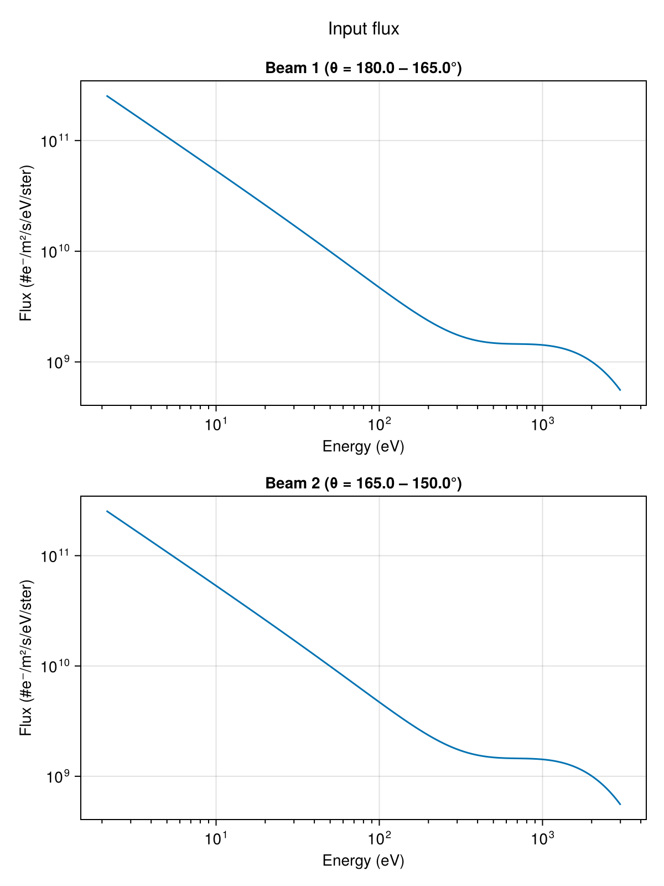
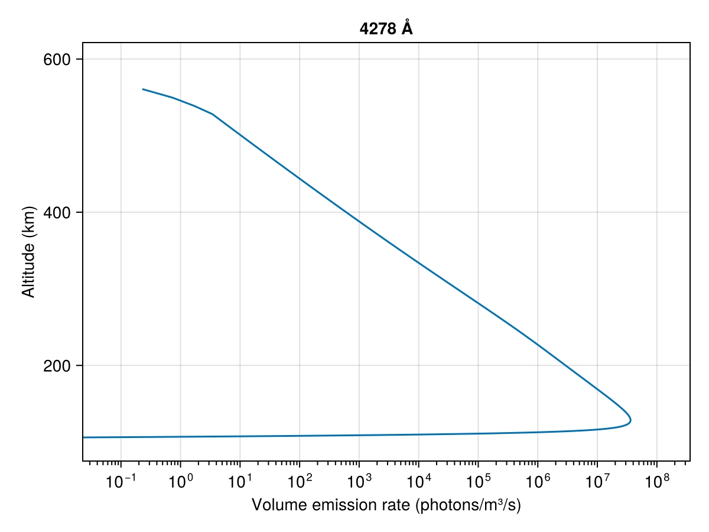

Steady-State Simulation
AURORA can also run steady-state simulations. In this mode, it computes the final equilibrium electron distribution for a constant (time-independent) precipitating input. This is useful when you only care about the long-term response and don't need to resolve the precise temporal dynamics.
Setup
using AURORA
# Atmospheric model — default VISIONS-2 conditions
msis_file = find_msis_file()
iri_file = find_iri_file()
model = AuroraModel(
[100, 600], # altitude limits [km]
180:-15:0, # pitch-angle bin edges [°]
3000, # maximum energy [eV]
msis_file,
iri_file,
13 # magnetic field angle to zenith [°]
)AuroraModel:
├── AltitudeGrid(100.0 - 600.0 km, 410 points)
├── EnergyGrid(2.0538565265003643-3013.813324409512 eV, 337 bins)
├── PitchAngleGrid(12 beams)
├── ScatteringData(12 beams, 720 directions)
├── Ionosphere(410 altitudes)
├── CrossSectionData(337 energies)
└── B angle to zenith: 13.0°Maxwellian input spectrum
A MaxwellianSpectrum provides a smooth, physically motivated energy distribution set by a characteristic energy (formula from the Meier et al. 1989 paper):
flux = InputFlux(
MaxwellianSpectrum(1e-3, 1000.0); # 1 mW/m², characteristic energy 1 keV
beams=1:2 # two most field-aligned downward beams
)InputFlux:
├── Spectrum: MaxwellianSpectrum(IeE_tot=0.001 W/m², E₀=1000.0 eV + LET)
├── Modulation: ConstantModulation()
├── Beams: [1, 2]
└── Source altitude: top of ionosphereCreate and run the simulation
savedir = mkpath(joinpath("data", "steady_state_example"))
sim = AuroraSimulation(model, flux, savedir)AuroraSimulation (Steady-state):
├── Model: AuroraModel(AltitudeGrid(100.0 - 600.0 km, 410 points), EnergyGrid(2.0538565265003643-3013.813324409512 eV, 337 bins))
├── Flux: InputFlux(MaxwellianSpectrum(IeE_tot=0.001 W/m², E₀=1000.0 eV + LET), ConstantModulation(), beams=[1, 2])
├── Savedir: data/steady_state_example
├── Time: steady-state
├── Cache: not initialized
└── Save flux: truerun!(sim)[ Info: Starting simulation...
Calculating flux 1%|▎ | ETA: 0:04:19
Calculating flux 56%|███████████████████▊ | ETA: 0:00:02
Calculating flux 100%|███████████████████████████████████| Time: 0:00:03Post-process
As for time-dependent simulations, it is possible to compute derived quantities from the raw electron flux and save them alongside the simulation output:
make_Ie_top_file(sim) # boundary condition (input flux applied at top)
make_volume_excitation_file(sim) # volumetric excitation rates for optical emissions
make_column_excitation_file(sim) # column-integrated excitation rates (steady-state scalar)
make_current_file(sim) # field-aligned electron currents and energy fluxes
make_heating_rate_file(sim) # electron heating ratesTop flux saved in data/steady_state_example/Ie_top.mat
Volume excitation rates saved in data/steady_state_example/Qzt_all_L.mat
Column excitation rates saved in data/steady_state_example/I_lambda_of_t.mat
Currents saved in data/steady_state_example/J.mat
Heating rates saved in data/steady_state_example/heating_rate.matreaddir(savedir)9-element Vector{String}:
"I_lambda_of_t.mat"
"IeFlickering-01.mat"
"Ie_incoming.mat"
"Ie_top.mat"
"J.mat"
"Qzt_all_L.mat"
"heating_rate.mat"
"neutral_atm.mat"
"parameters.txt"Visualize
AURORA.jl provides helper plotting functions through a Makie extension. Install and load a Makie backend to access them (more information in Visualization).
Input flux
plot_input can be used to inspect the prescribed input spectrum directly from the simulation object:
using CairoMakie
fig = plot_input(sim)
Volume excitation profile
plot_excitation! can be used to visualize the altitude profile of the volume excitation rate for a given emission line.
using CairoMakie
vol = load_volume_excitation(savedir)
fig = Figure()
ax = Axis(fig[1, 1];
xlabel = "Volume emission rate (photons/m³/s)",
ylabel = "Altitude (km)",
xscale = log10,
title = "4278 Å")
plot_excitation!(ax, vol; field = :Q4278)
fig
Next steps
- Time-Dependent Simulation — run the general time-dependent case.
- Input flux — explore all spectrum and modulation types.
- Post-processing & analysis — detailed walkthrough of all analysis functions.